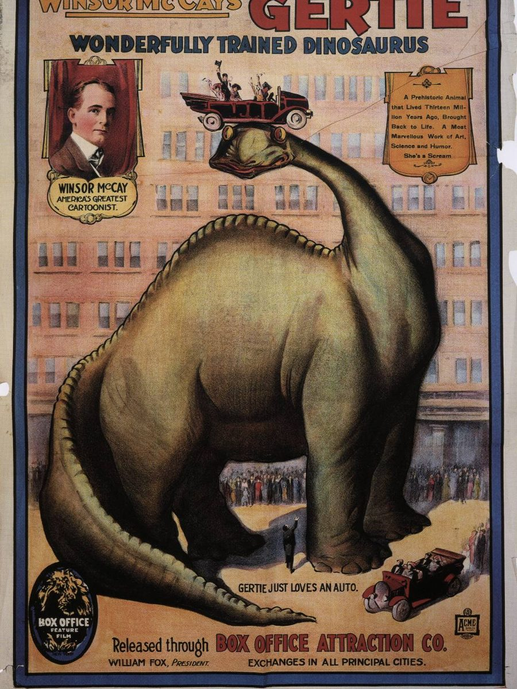
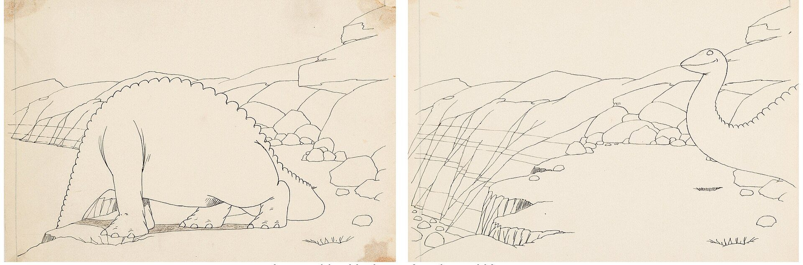
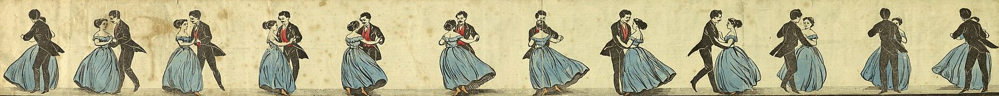
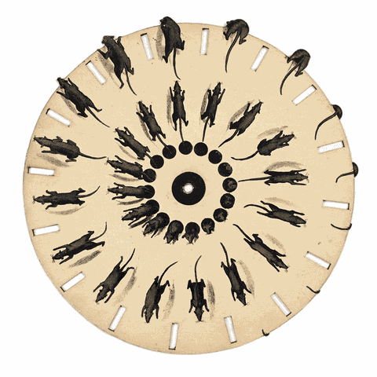

Why Coins Have Tiny Ridges
Those ridges on your coins? They were a crime-stopper.

A free kit for Claude Code and Cowork. Paste one prompt and it sets up your faceless video page. Then every chat makes one finished video.
Free and open source (MIT), {{VERSION}}. Posts to Facebook, Instagram, Threads, YouTube Shorts and TikTok.
HQ chatRound C of E
What should your page be about?
Saved to studio.md and pages/time-intern/page.md
My Studioyour folder
Video chatEP 007
Five topics, scored out of 30. Pick one:
Hook, first 2 secondsLook at the edge of a coin. Those tiny ridges stopped a crime wave.
Plus two fresh picks from this week's trends.
script.md52 s, 131 words
Why Coins Have Tiny Ridges
brief.md: shotsGoogle Flow
13 shots: 10 stills, 3 short clips
3 clips × 2 tries × 7 credits = 42 of today's 50 free
post.mdEP 007
Why Coins Have Tiny Ridges
Those ridges on your coins? They were a crime-stopper.
Times for the audience's evening, US Eastern.
ai-handoff-summary.mdread first
Pick today's topic
Each video chat offers five scored topics. Pick one here, then follow it through the next screens.
Chats forget. Files don't. Your first chat turns your answers into files: rules, brand, topics and a log of every video. Each new chat reads them first, makes one finished video and writes down what it did.

Winsor McCay drew Gertie by hand, frame by frame, in 1914. One character, every frame: the trick behind every faceless page.
You answer everything once, in the first chat.
It all goes into files that every chat reads first.
Each new chat makes one finished video.

Zoetrope strip, about 1860. Twelve drawings, one dance. Your videos work the same way.
| Make an empty studio folder | Anywhere, like D:\My Studio | You | 1 min |
|---|---|---|---|
| Open it in Claude Code or Cowork | How to open it | You | 2 min |
| Paste the master prompt | , paste, press Enter | You | 1 min |
| It downloads the kit | Into page-factory/ | HQ chat | 2 min |
| Answer five rounds of questions | Multiple choice | You | 15 min |
| Create or connect five accounts | One app at a time | You log in | 45 min |
| Install the free tools | Your computer | HQ asks first | 15 min |
| Make your brand pictures | Google Flow, from its prompts | You | 20 min |
| Get 20 topics and a calendar | pages/your-page/ | HQ chat | 5 min |
| Watch a 10-second test clip | Rendered with HyperFrames | HQ chat | 5 min |
| Open a new chat | |||
| Paste Make one video | , same folder | You | 1 min |
|---|---|---|---|
| Pick one of five topics | Scored, best first | You | 1 min |
| Sources, script and title | Two sources for every fact | Video chat | 10 min |
| Make the visuals in Flow | One prompt sheet, exact file names | You | 30 min |
| Type: assets done | It checks every file | You | 1 min |
| Record or make the voice | Your voice, Kokoro or Chatterbox | You or the chat | 10 min |
| Captions, edit and cover | faster-whisper, HyperFrames | Video chat | 15 min |
| Post to five platforms | Each app's own scheduler | You | 10 min |
| Open a new chat | |||
| Make a batch at the weekend | , one new chat | You and the chat | 2-4 h |
|---|---|---|---|
| Review the week's numbers | , paste your stats | You and the chat | 15 min |
| Refresh trends, once a month | , one new chat | The chat | 20 min |
| Update the kit when it changes | , pages stay safe | The chat | 10 min |
Times are rough guesses for your first weeks. They shrink once your page has a routine.
Once, in an empty folder. It downloads the kit, asks you everything and sets up your studio.
{{PROMPT:MASTER}}Every video, in a new chat. Five topics, then the whole video, cover and posts.
{{PROMPT:NEW_VIDEO}}Weekends. Several videos in one chat, one prompt sheet for Flow, one posting schedule.
{{PROMPT:WEEKLY_BATCH}}Once a week. Paste your numbers, get clear decisions and see how close you are to getting paid.
{{PROMPT:WEEKLY_REVIEW}}Any time a chat stops or gets too long. It picks up exactly where the last one left off, setup included.
{{PROMPT:CONTINUE}}When you're ready for page two. It finds a trending format and sets up another page in the same studio.
{{PROMPT:NEW_PAGE}}Once a month. It checks trends and platform rules, then refreshes your topic list.
{{PROMPT:TREND_REFRESH}}When a new version is out. It updates the kit, shows what changed and never touches your pages.
{{PROMPT:UPDATE_KIT}}For builders. It turns real studio work into improvements to the kit itself.
{{PROMPT:RETRO}}
Already have a Facebook Page or a YouTube channel? Keep it. Setup asks for the link and fixes what's missing with you.
Claude Code, best for setup. Install it with the quickstart. On Windows, open your studio folder, right-click an empty spot and choose Open in Terminal. On a Mac, open Terminal, type cd and a space, drag the folder into the window and press Enter. Then type claude and press Enter.
Cowork, in the Claude desktop app. Connect your studio folder and start a new task. Installs and video rendering work best in Claude Code.
Then paste the master prompt. If downloads are blocked, get the ZIP, unzip it into your studio folder and paste again.
The kit and every default tool are free or open source: Google Flow's 50 free credits a day for visuals, HyperFrames and FFmpeg for editing, faster-whisper for captions, your own voice or the free Chatterbox and Kokoro voices, and each app's own scheduler.
You need a Claude plan to run the chats. Paid tools you already have, like CapCut, Higgsfield or Google AI Pro, are used when you say so. New paid tools are only suggested once your page earns.
No face, ever. For the voice, you choose: record your own (the most original), clone your own voice for free with Chatterbox, use a free preset voice from Kokoro, or a paid voice you already have.
Setup offers three concepts from the kit's trend research, or runs a fresh scan first. Formats working now: 2D mascot curiosity stories, 3D "what would happen" Shorts, stickman explainers, animated true stories, what-if questions and animated comedy.
Other pages inspire the format, never the content. Every story is yours, with two sources for each fact.
Checked 2026-11-05. Your weekly review tracks how close you are.
Yes, when it's original and tells a real story. Meta and YouTube cut reach and pay for reposted clips and mass-produced slideshows. The kit makes each video yours: your script, your character, your voice and two sources per fact.
On YouTube, animation and your own cloned voice don't need an AI label. Your mascot tells stories and never gives health, legal or money advice: YouTube won't pay channels whose AI character does.
An optional thank-you. Setup asks whether to hide a tiny "KuyaLoy" signature in one background spot per video: a poster on a wall, a shop sign, a T-shirt print, a TV in the room. You can hide your own name instead, or say no. It's off unless you say yes.